The Graphical Editor
The graphical editor that allows defining a GAMA model through a graphical interface (gadl files). It is based on the Graphiti Eclipse plugin. It allows as well to produce a graphical model (diagram) from a gaml model.
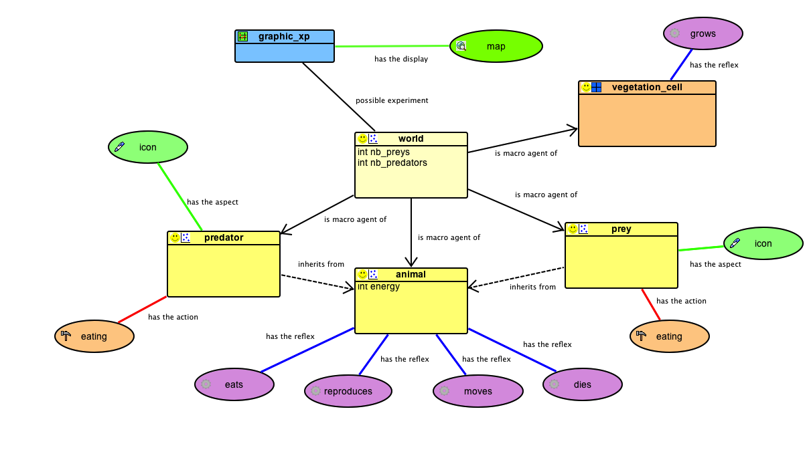
Table of contents
- The Graphical Editor
Installing the graphical editor
Using the graphical editor requires to install the graphical modeling plug-in. See here for information about plug-ins and their installation.
The graphical editor plug-in is called Graphical_modeling and is directly available from the GAMA update site http://updates.gama-platform.org/graphical_modeling

Note that the graphical editor is still under development. Updates of the plug-in will be added to the GAMA website. After installing the plug-in (and periodically), check for updates for this plug-in: in the "Help" menu, choose "Check for Updates" and install the proposed updates for the graphical modeling plug-in.
Creating a first model
A new diagram can be created in a new GAMA project. First, right-click on a project, then select "New" on the contextual menu. In the New Wizard, select "GAMA -> Model Diagram", then "Next>"
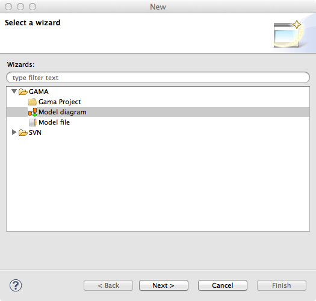
In the next Wizard dialog, select the type of diagram (Empty, Skeleton or Example) then the name of the file and the author.
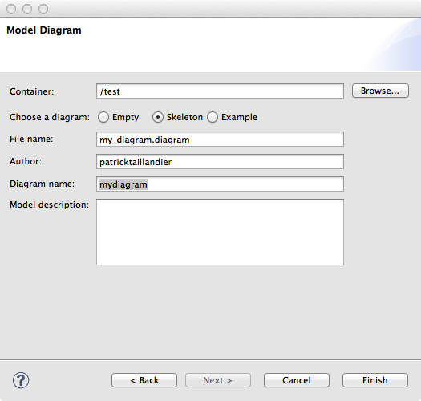
Skeleton and Example diagram types allow to add to the diagram some basic features.
Status of models in editors
Similarly to GAML editor, the graphical editor proposes a live display of errors and model statuses. A graphical model can actually be in three different states, which are visually accessible above the editing area: Functional (orange color), Experimentable (green color) and InError (red color). See the section on model validation for more precise information about these statuses.
In its initial state, a model is always in the Functional state, which means it compiles without problems, but cannot be used to launch experiments. The InError state occurs when the file contains errors (syntactic or semantic ones).
Reaching the Experimentable state requires that all errors are eliminated and that at least one experiment is defined in the model. The experiment is immediately displayed as a button in the toolbar, and clicking on it will allow the modeler to launch this experiment on your model.
Experiment buttons are updated in real-time to reflect what's in your code. If more than one experiment is defined, corresponding buttons will be displayed in addition to the first one.
Diagram definition framework
The following figure presents the editing framework:
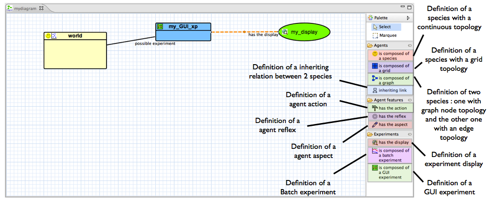
Features
agents
species

The species feature allows the modeler to define a species with a continuous topology. A species is always a micro-species of another species. The top-level (macro-species of all species) is the world species.
- source: a species (macro-species)
- target: -
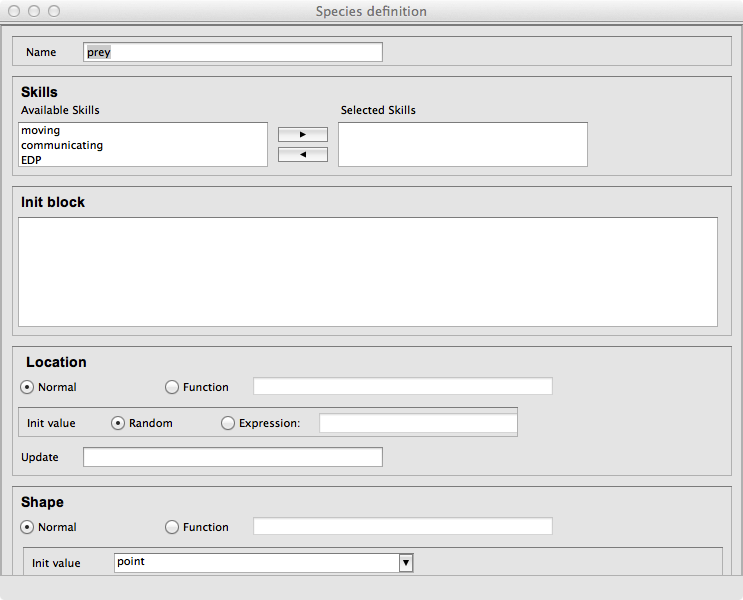
grid
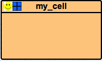
The grid feature allows the modeler to define a species with a grid topology. A grid is always a micro-species of another species.
- source: a species (macro-species)
- target: -
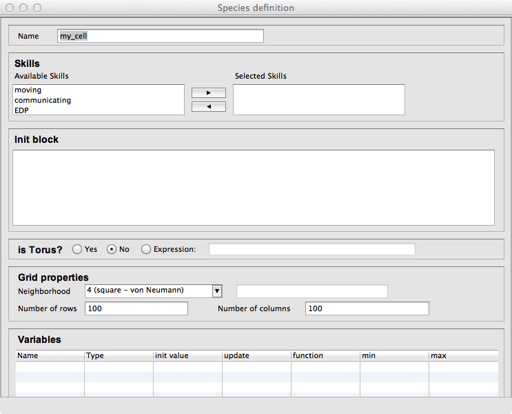
Inheriting link
The inheriting link feature allows the modeler to define an inheriting link between two species.
- source: a species (parent)
- target: a species (child)
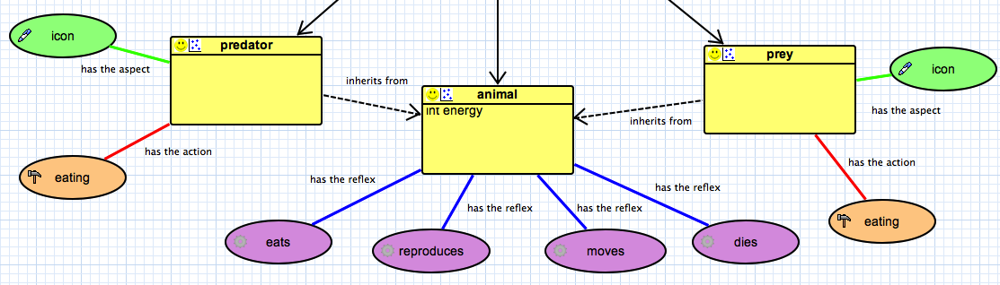
world
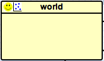
When a model is created, a world species is always defined. It represents the global part of the model. The world species, which is unique, is the top-level species. All other species are micro-species of the world species.
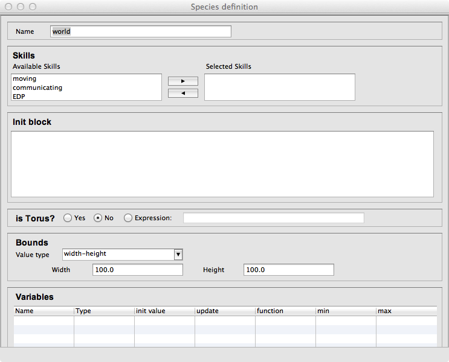
agent features
action
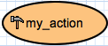
The action feature allows the modeler to define an action for a species.
- source: a species (owner of the action)
- target: -
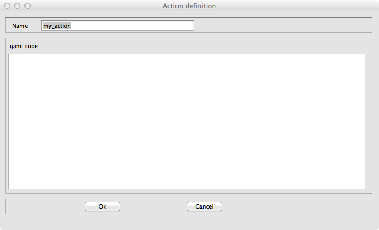
reflex
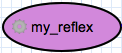
The reflex feature allows the modeler to define a reflex for a species.
- source: a species (owner of the reflex)
- target: -
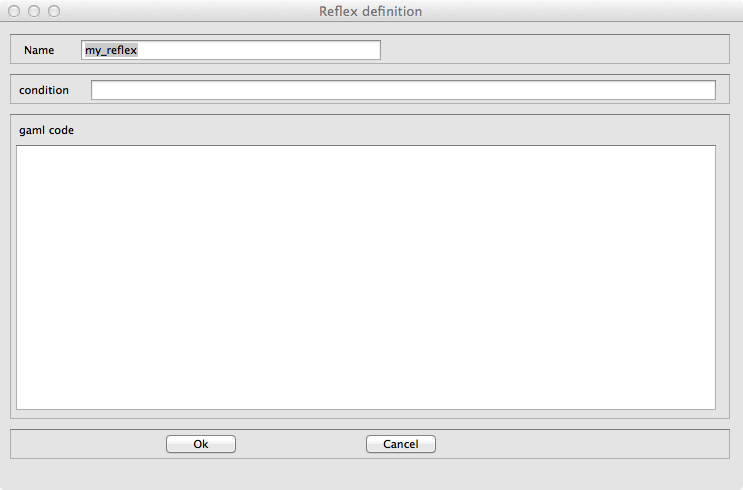
aspect
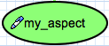
The aspect feature allows the modeler to define an aspect for a species.
- source: a species (owner of the aspect)
- target: -
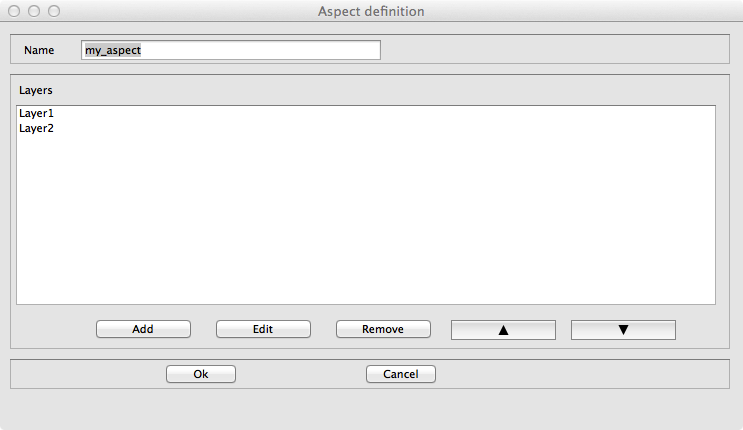
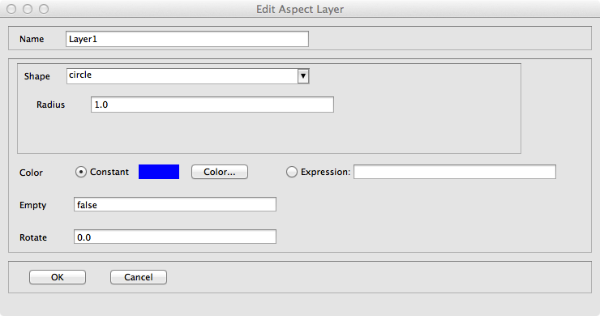
equation

The equation feature allows the modeler to define an equation for a species.
- source: a species (owner of the equation)
- target: -

experiment
GUI experiment
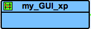
The GUI Experiment feature allows the modeler to define a GUI experiment.
- source: world species
- target: -
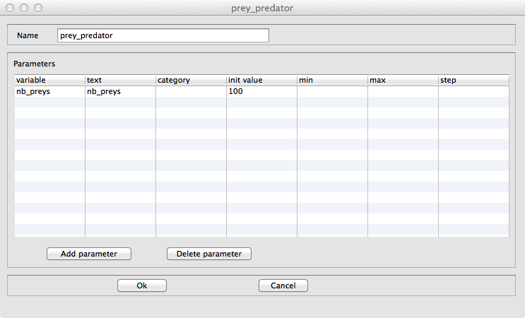
display
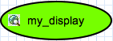
The display feature allows the modeler to define a display.
- source: GUI experiment
- target: -
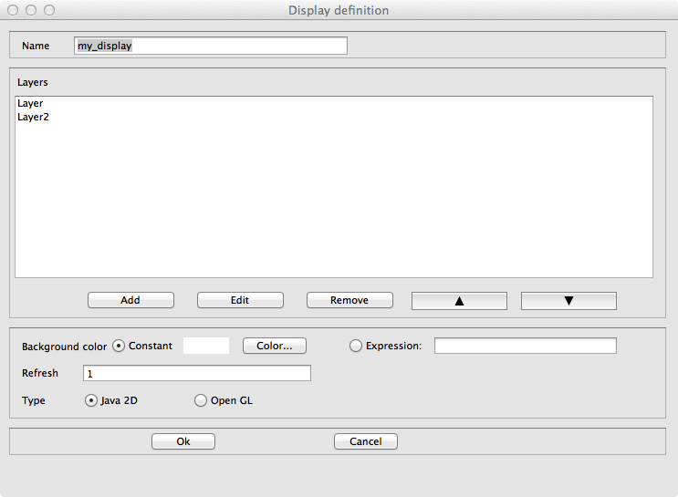
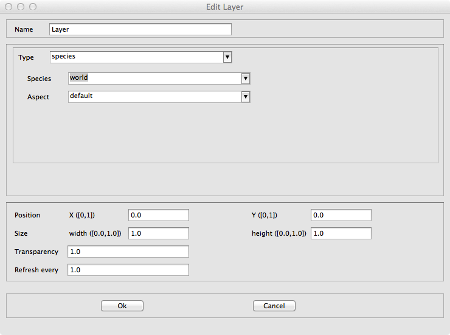
batch experiment
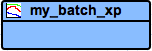
The Batch Experiment feature allows the modeler to define a Batch experiment.
- source: world species
- target: -
BDI Architecture
Plan

The Plan feature allows the modeler to define a plan for a BDI species, i.e. a sequence of statements that will be executed in order to fulfill a particular intention.
- source: a species with a BDI architecture
- target: -

Rule

The Rule feature allows the modeler to define a rule for a BDI species, i.e. a function executed at each iteration to infer new desires or beliefs from the agent’s current beliefs and desires.
- source: a species with a BDI architecture
- target: -

Perception

The Perception feature allows the modeler to define a perception for a BDI species, i.e. a function executed at each iteration that updates the agent’s Belief base according to the agent perception.
- source: a species with a BDI architecture
- target: -

Finite State Machine Architecture
State

The State feature allows the modeler to define a state for a FSM species, i.e. sequence of statements that will be executed if the agent is in this state (an agent has a unique state at a time).
- source: a species with a finite state machine architecture
- target: -

Task-based Architecture
Task

The Task feature allows the modeler to define a task for a Tasked-based species, i.e. sequence of statements that can be executed, at each time step, by the agent. If an agent owns several tasks, the scheduler chooses a task to execute based on its current priority weight value.
- source: a species with a task-based architecture
- target: -

Pictogram color modification
It is possible to change the color of a pictogram.
- Right-click on a pictogram, then select the "Chance the color".
GAML Model generation
It is possible to automatically generate a Gaml model from a diagram.
- Right-click on the graphical framework (where the diagram is defined), then select the "Generate Gaml model". A new GAML model with the same name as the diagram is created (and open).